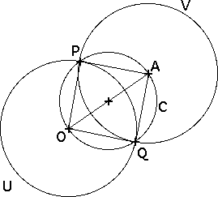

Constructing an orthogonal circle from an exterior point
|
| Construction Draw the segment OA and the circle C with center the midpoint of segment OA and passing through O and A. |
| Denote by P and Q the points of intersection of C and U. |
| Then V is the circle with center A and passing through P. |
|  |
| Proof First show the segments PA and QA have the same length. |
| Note both angles OPA and OQA are inscribed in a semicircle of C, so both are right angles and consequently triangle OPA is congruent to triangle OQA. |
| So AP and AO have the same length and V passes through Q. |
| Because OP and OQ are radii of U and AP and AQ are radii of V, and the angles OPA and OQA are right angles, U and V are orthogonal at P and Q. |
Return to Basic constructions.